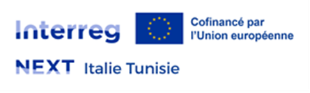

ISIPHUR

Il progetto ISIPHUR combatte la desertificazione nel Mediterraneo con un approccio innovativo e sostenibile. Mira a promuovere lo sviluppo sostenibile nell'area Interreg Next Italia Tunisia, affrontando il degrado del suolo e le sue conseguenze.
ISIPHUR si basa su un Decision Support System (DSS) innovativo, utilizzando tecnologie geospaziali e intelligenza artificiale. Questo sistema valuta la vulnerabilità alla desertificazione in tempo reale, integrando anche realtà virtuale (VR AR XR) per la comunicazione dei rischi.
Il progetto adotta un approccio olistico e multidisciplinare, integrando intelligenza artificiale e principi One Health. Vengono implementati sistemi di monitoraggio per raccogliere dati sulla salute degli ecosistemi e incoraggiate pratiche agricole e forestali sostenibili per la fertilità del suolo.
L'innovazione di ISIPHUR risiede nell'integrazione di tecnologie e nell'approccio multidisciplinare che lega salute umana, animale e ambientale. Fondamentale è la fase di prevenzione, che grazie al monitoraggio e all'allerta precoce mira a prevenire la desertificazione anziché gestirla tardivamente.
Il progetto assicura la partecipazione attiva di tutte le parti interessate, dalle autorità alle comunità locali, garantendo soluzioni efficaci e condivise. Il successo di ISIPHUR contribuirà alla protezione ambientale, alla sicurezza alimentare, alla salute e alla stabilità sociale nell'area.
SWING.IT partecipa al progetto in qualità di partner tecnologico. SWING.IT sarà il coordinatore del WG3, dove l'azienda supervisiona, coordina e controlla la creazione e l'implementazione dell'iDMP, inclusa l'installazione e la configurazione dell'ambiente Big Data e dei suoi sottosistemi. SWING.IT coordinerà l'architettura dell'iDMP da realizzare. In collaborazione con INAT, coordinatore del GT4, SWING.IT metterà a disposizione le proprie capacità per definire, sviluppare e implementare strategie operative per la previsione e la post-gestione degli scenari di rischio di desertificazione (DSS e scenari).
ISIPHUR - Innovazione per la sostenibilità e l'identificazione intelligente dei territori minacciati dalla desertificazione nella regione del Mediterraneo, come tutela fondamentale dei diritti umani.
Programma Interreg VI-A Next Italia-Tunisia. Avviso 1/2024 - Priorità 2.
Obiettivo strategico 2. Uno spazio in più per la cooperazione verde resistente e basso emissioni di carbonio. Obiettivo specifico 2.4 OS2 2.4 Promuovere l'adattamento al cambiamento climatico, prevenzione dei rischi di disastro e resilienza
